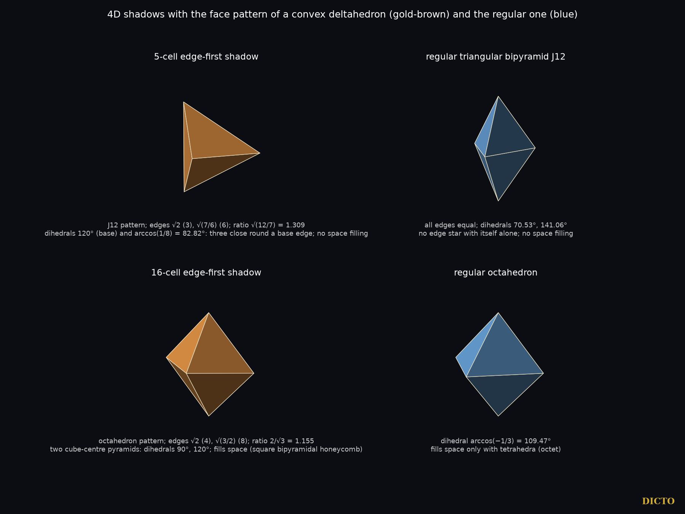

Deltahedra that join differently: the triangle-faced shadows and slices of the 5-, 16-, 24- and 600-cell
DICTO's ideas (27 October 2026): "4th dimensional shadows may more closely represent any new deltahedron type family than they do the original ones", and, of such variants against the regular ones, "different shapes with different attachability". The same day a search for new deltahedra glued from DICTO's pieces (AXE, CLEO, Cleo-Icos, Admiral Cap, Tricap and others; up to 4 pieces of all kinds, up to 5 of DICTO's) found 772 solids with all faces equilateral, every one a gluing of regular tetrahedra, octahedra and icosahedra: no new deltahedron and no variant. The fourth dimension was the next place to look.
All arithmetic is exact in ℚ(√5) (numbers a + b√5, a and b rational, with exact signs); floating point only proposes convex hulls, and every hull face is then checked exactly (all points on one side, every edge in two faces, Euler characteristic 2). For each solid and each of four directions — through a vertex, the middle of an edge, the centre of a triangle and the centre of a cell — we take the shadow (the outline of the projection into the 3-space at right angles), the layers (the outline of the vertices at one height) and the slices (the true cut by a 3-space at right angles, through the centre and at every vertex height: the vertices on it plus every edge crossing it). 223 records, 157 distinct solids, 27 with all faces triangles. Each is compared with the eight convex deltahedra by graph isomorphism; for the other patterns an equilateral form is sought (least squares on the edge lengths, as in Tsuruta et al. 2014) and confirmed exactly where found.
The shadows and slices themselves are convex, as every projection and cut of a convex solid is; their triangles are unequal. The question for each is whether its pattern of triangles can be rebuilt with all edges equal. Where that needs some edges folded inwards, the equilateral form is non-convex: the dents belong to that form, not to the 4D solid.
| 4D source | Solid | Pattern | Edge ratio | Equilateral form |
|---|---|---|---|---|
| 5-cell | edge-first shadow (TBP-5) | triangular bipyramid J12 | √(12/7) = 1.309 | variant of J12 |
| 16-cell | edge-first shadow = central slice (OCT-16) | octahedron | 2/√3 = 1.155 | variant of the octahedron |
| 600-cell | vertex-first shadow = central slice (42, 80) | pentakis icosidodecahedron | 2/√3 | 12-dented icosahedron (exact) |
| 600-cell | vertex-first slices at the dodecahedron height (32, 60) | pentakis dodecahedron | 1.144 | augmented dodecahedron; excavated dodecahedron (both exact) |
| 600-cell | edge-first slices (17, 30): Shadow-17 | none of the 8 | 2.927 | two J11 on their pentagons (exact) |
| 16-, 600-cell | face- and edge-first (8 or 12 vertices) | hexagonal, decagonal bipyramids | 1.41–2.29 | none can exist (Prop. 2) |
| 600-cell | six large slices (28–72 vertices) | none of the 8 | 2.29–4.81 | §6 |
All other all-triangle results are the regular tetrahedron, octahedron or icosahedron, and each is a cell or vertex figure of its 4D solid.
Proposition 1. No shadow, layer or slice of the 5-, 16-, 24- or 600-cell along the four main directions is a regular deltahedron, except copies of the solid's own cells and vertex figures. The only convex-deltahedron patterns that occur among the others are those of the triangular bipyramid and the octahedron, each with unequal edges.
Proposition 2. A bipyramid over an n-gon with all edges equal exists only for n ≤ 5: for n ≥ 6 the equilateral apex would lie in the plane of the polygon or the solid would cross itself. So the hexagonal and decagonal bipyramid patterns of the 16- and 600-cell have no deltahedron.

TBP-5, the 5-cell's edge-first shadow, has edges √2 (three) and √(7/6) (six). Its faces match no face of J12. Its base edges have a dihedral angle of exactly 120°, so three copies close face to face round an edge, which regular J12s never do; its side edges have angle arccos(1/8), which closes no star, so neither solid fills space.
OCT-16, the 16-cell's edge-first shadow, is two pyramids from the centre of a cube to two opposite faces, base to base. Its dihedral angles are 90° and 120°, and it fills space by itself, face to face: it is the cell of the square bipyramidal honeycomb (a known tiling, credited). The regular octahedron fills space only together with tetrahedra. A mixed edge star exists in angle (2·90° + 70.53° + 109.47° = 360°), but the faces do not match, so the variant and the regular family do not join face to face.
So the variants differ in shape and in how they join, as DICTO expected.
The 600-cell's vertex-first shadow is also its central slice, with 42 vertices and 80 triangles. Its equilateral form is an icosahedron with a shallow dent at each vertex (placeholder name: 12-dented icosahedron). The slices at the dodecahedron height (32 vertices, 60 triangles) give the excavated dodecahedron, a known deltahedron, and its outward partner, the augmented dodecahedron. Both placeholder names describe obvious constructions and are not claimed new.
Shadow-17. The edge-first slices at the outer heights have 17 vertices and 30 triangles, five-fold symmetric: two tips, then rings of 5, 5 and 5 vertices, the middle ring of degree 6. An equilateral form was first found only numerically. DICTO's idea of halves pinned it down: cut the pattern at its middle ring and each half is a J11, the gyroelongated pentagonal pyramid (the diminished icosahedron). Shadow-17's equilateral form is two J11 glued on their pentagons: exact by construction, with edges all 1, and all 136 corner-to-corner distances of the numerical form agree with it to 4·10⁻¹⁶. Its five folded edges are the shared pentagon's, where two J11 angles add to 2 × 100.81° = 201.62°. The J11 is the piece DICTO's work began with, filling the gaps between dodecahedra and icosahedra.
The 600-cell has six larger slice patterns, each made only of triangles: 28 to 72 vertices, with rings of high-degree vertices (7 to 10 triangles meeting) between degree-5 tips. Cutting them in halves or caps, as for Shadow-17, recognised no known piece, so each was solved directly. The exact symmetry group of each slice equals the full symmetry group of its triangle pattern. Keeping that symmetry, one vertex of each orbit is placed in the subspace its stabiliser fixes, and each orbit of edges gives one equation |edge|² = 1; every system is square. Its number of complex solutions was found exactly over ℚ(√5) (Singular), every solution was found and refined to 120 digits, and each system counts as complete only when the solutions found equal the exact count. Every real solution was then tested for a proper embedding.
| Slice (600-cell) | Vertices, triangles | Symmetry | Solutions (complex / real) | Equilateral form |
|---|---|---|---|---|
| vertex-first, at ±(√5−1) | 72, 140 | Ih | 8 / 4 | none: vertices coincide |
| edge-first, at ±(3+√5)/2 | 32, 60 | D5d | 128 / 48 | none: edges pierce faces, or faces touch |
| face-first, at ±(4+2√5)/3 | 30, 56 | D3d | 464 / 104 | none: edges pierce faces, or faces touch |
| cell-first, at ±(5+3√5)/4 | 28, 52 | Td | 32 / 12 | none: edges pierce or cross, vertices coincide |
| cell-first, at ±(3+√5)/2 | 42, 80 | Td | 96 / 32 | none: every solution crosses itself |
| cell-first, at ±(2+√5)/2 | 48, 92 | Td | 192 / 48 | Slice-48 (one shape; its two solutions differ by a half-turn) |
The 72-, 32-, 28- and 42-vertex systems were also solved with only their rotation group kept; again no form exists. The real counts of the 72-, 32-, 28- and 42-vertex systems were rechecked exactly.

Slice-48 contains no piece of the icosahedron (no 138.19° dihedral angle and no pentagonal cap), unlike Shadow-17. It is not among the non-convex deltahedra we checked (see §8), but the original papers were not all read, so it is not claimed new. Forms with less symmetry than the slice's group are not excluded; the rotation-only systems of the 30- and 48-vertex slices did not finish in 50 minutes.
The vertex-first "sections" of the 600-cell often listed (icosahedron, dodecahedron, icosahedron, icosidodecahedron) are the outlines of its vertex layers. A true cut at the dodecahedron height or at the equator also meets edges that cross it, and adds their midpoints: the true central section is the 42-vertex solid of §5, with the same pattern, edge lengths and angles as the shadow. Checked exactly and with an independent floating-point computation.
Coxeter's Regular Polytopes treats the polytopes, their projections and the vertex-first sections of the 600-cell. The eight convex deltahedra are classical (Freudenthal and van der Waerden 1947); non-convex equilateral realisations and dented variants of deltahedral patterns are studied by Tsuruta et al. (2014). For Slice-48 we also checked the biform deltahedra (Cundy; Olshevsky), the isohedral deltahedra (Shephard; McNeill) and Trigg's spiral deltahedra, through their Wikipedia summaries. The square bipyramidal honeycomb and the excavated dodecahedron are known. We did not find the comparison of the 4D shadows and slices with the deltahedra, the attachability of the variants, or Shadow-17's identification in the sources checked.
Sources checked (27 October 2026; full record: study folder 2026-10-27-4d-shadows, prior-art.md, and 2026-10-27-five-pyramids, prior-art.md). Library (1007 references, 11 queries on deltahedra, 4D polytope projections and sections, 600-cell, Platonic face pyramids, space filling): no deltahedron literature in the library. Web: Tsuruta et al., ICGG 2014, deltahedral graphs (cgg.cs.tsukuba.ac.jp); Wikipedia, "600-cell", "Deltahedron", "Excavated dodecahedron"; the square bipyramidal honeycomb (via search); Polytope Wiki; MathWorld. Coxeter, Regular Polytopes (3rd ed. 1973) is cited for its well-known contents; it was not re-read for this paper.
| 600-cell shadow or slice | Triangles | Rebuilt with equal edges |
|---|---|---|
| vertex-first shadow = central slice (42 vertices) | 80 | 12-dented icosahedron: an icosahedron with a shallow dent at each of its 12 vertices |
| vertex-first slices at the dodecahedron height (32 vertices) | 60 | excavated dodecahedron (dents inward; known) and augmented dodecahedron (pyramids outward) |
| edge-first slices at the outer heights (17 vertices) | 30 | Shadow-17: two J11 glued on their pentagons |
| cell-first slices with 48 vertices | 92 | Slice-48: tetrahedral symmetry, dihedral angles 81.75° to 243.20° |
Shadow-17 is built from two copies of J11, the piece DICTO's work began with. Slice-48 is the largest of the four: 92 equal triangles with the full tetrahedral symmetry of its slice, found by solving all six large slices of the 600-cell exactly.
Data and code. Studies 2026-10-27-4d-shadows (q5.py exact arithmetic, polytopes.py, shadows.py, classify.py, attach.py, shadow17_j11.py, count_exact.py, solve_sage.py; data/shadows.json, all-triangle-matches.json, attachability.json, large-slices-systems.json, form_V48_full_36.json) and 2026-10-27-five-pyramids. References: DICTO, The Rule of Halves (#57), DICTO DOI 10.5281/zenodo.23647898; DICTO, Every Mix of the Platonic Solids Fills Space (#47), DICTO DOI 10.5281/zenodo.23551326; DICTO, Aristotle's Pyramid (#44), DICTO DOI 10.5281/zenodo.23529497.